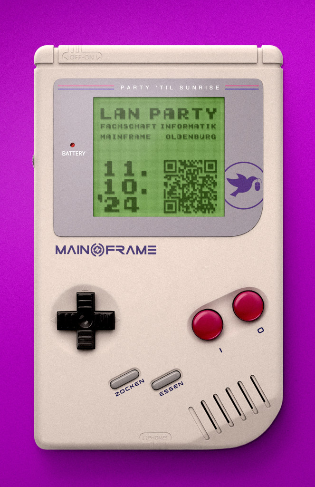

{% block content %}
{% filter markdown|typogrify -%}

Wir freuen uns, die nächste LAN-Party für die Studierenden der Informatik an der Universität Oldenburg anzukündigen!
Diesmal dreht sich alles um spannende Couch-Crawler!

- Wann: 11. Oktober 2024, ab 18:00 Uhr
- Wo: Mainframe Oldenburg
- Anreise: Informationen zur Anreise unter [Kontakt](/contact.de.html)
- Eintritt: 0 €! Tickets über das [Ticketsystem](https://tickets.mainframe.io)

# Was euch erwartet:

Ein breites Angebot an Spielen für PC, Konsole und VR inklusive Verpflegung, Snacks und Getränken.
Zusätzliche Unterhaltung bieten das Valve Index VR Headset.
Wer möchte, kann auch Dinge über Lasercutter und 3D-Drucker herstellen.

Schlafmöglichkeiten: Es gibt einige Couches für kurze Nickerchen, aber keine vollständige Schlafmöglichkeit.

Die Tickets sind Planungstickets, die euch und auch uns helfen, einen Platz zu reservieren. Bitte denkt daran, nur zu
bestellen, wenn ihr auch wirklich teilnehmen wollt. Wir verzichten hier auf persönliche Daten, achtet aber darauf, dass
wir euch erreichen können.

# Agenda:

- Beginn: 11.10.2024, 18:00 Uhr
- Ende: 12.10.2024, 10:00 - 12:00 Uhr (Frühstück und eventuell weiteres Gaming)

# Was ihr mitbringen solltet:

Viele Konsolen werden von der Fachschaft gestellt, ihr könnt aber auch eure eigenen Geräte mitbringen!

- Gaming-Gerät (PC, Laptop, Konsole)
- Monitor und Peripheriegeräte (Maus, Tastatur, Controller)
- LAN-Kabel (3-5 Meter), Stromkabel und Steckdose
- Kopfhörer (keine aktiven Lautsprecher)
- Eure Spiele vorinstalliert

Bitte beachten: Ihr müsst mindestens 18 Jahre alt sein, um teilnehmen zu können. Behandelt euer Ticket wie ein reguläres
bezahltes Ticket und informiert uns, wenn ihr doch nicht kommen könnt.

Wir freuen uns auf ein unvergessliches Gaming-Wochenende mit euch!


<div class="article__image-left">

</div>

{%- endfilter %}
{% endblock content %}
